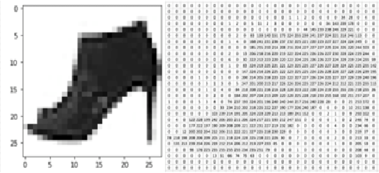

%matplotlib inline
import torch
from torch.utils.data import Dataset
from torchvision import datasets
from torchvision.transforms import ToTensor
import matplotlib.pyplot as plt
import os
import pandas as pd
from torchvision.io import read_image
from torch.utils.data import DataLoader
Datasets & DataLoaders#
Code for processing data samples can get messy and hard to maintain; we ideally want our dataset code to be decoupled from our model training code for better readability and modularity.
PyTorch provides two data primitives: torch.utils.data.DataLoader and torch.utils.data.Dataset
that allow you to use pre-loaded datasets as well as your own data.
Dataset stores the samples and their corresponding labels, and DataLoader wraps an iterable around
the Dataset to enable easy access to the samples.
PyTorch domain libraries provide a number of pre-loaded datasets (such as FashionMNIST) that
subclass torch.utils.data.Dataset and implement functions specific to the particular data.
They can be used to prototype and benchmark your model. You can find them
here: Image Datasets,
Text Datasets, and
Audio Datasets
Loading a Dataset#
Here is an example of how to load the Fashion-MNIST dataset from TorchVision. Fashion-MNIST is a dataset of Zalando’s article images consisting of 60,000 training examples and 10,000 test examples. Each example comprises a 28×28 grayscale image and an associated label from one of 10 classes.

We load the FashionMNIST Dataset with the following parameters:
rootis the path where the train/test data is stored,trainspecifies training or test dataset,download=Truedownloads the data from the internet if it’s not available atroot.transformandtarget_transformspecify the feature and label transformations
training_data = datasets.FashionMNIST(
root="data",
train=True,
download=True,
transform=ToTensor()
)
test_data = datasets.FashionMNIST(
root="data",
train=False,
download=True,
transform=ToTensor()
)
Iterating and Visualizing the Dataset#
We can index Datasets manually like a list: training_data[index].
We use matplotlib to visualize some samples in our training data.
labels_map = {
0: "T-Shirt",
1: "Trouser",
2: "Pullover",
3: "Dress",
4: "Coat",
5: "Sandal",
6: "Shirt",
7: "Sneaker",
8: "Bag",
9: "Ankle Boot",
}
figure = plt.figure(figsize=(8, 8))
cols, rows = 3, 3
for i in range(1, cols * rows + 1):
sample_idx = torch.randint(len(training_data), size=(1,)).item()
img, label = training_data[sample_idx]
figure.add_subplot(rows, cols, i)
plt.title(labels_map[label])
plt.axis("off")
plt.imshow(img.squeeze(), cmap="gray")
plt.show()
Creating a Custom Dataset for your files#
A custom Dataset class must implement three functions: __init__, __len__, and __getitem__.
Take a look at this implementation; the FashionMNIST images are stored
in a directory img_dir, and their labels are stored separately in a CSV file annotations_file.
In the next sections, we’ll break down what’s happening in each of these functions.
class CustomImageDataset(Dataset):
def __init__(self, annotations_file, img_dir, transform=None, target_transform=None):
self.img_labels = pd.read_csv(annotations_file)
self.img_dir = img_dir
self.transform = transform
self.target_transform = target_transform
def __len__(self):
return len(self.img_labels)
def __getitem__(self, idx):
img_path = os.path.join(self.img_dir, self.img_labels.iloc[idx, 0])
image = read_image(img_path)
label = self.img_labels.iloc[idx, 1]
if self.transform:
image = self.transform(image)
if self.target_transform:
label = self.target_transform(label)
return image, label
init#
The init function is run once when instantiating the Dataset object. We initialize the directory containing the images, the annotations file, and both transforms (covered in more detail in the next section).
The labels.csv file looks like: ::
tshirt1.jpg, 0
tshirt2.jpg, 0
......
ankleboot999.jpg, 9
def __init__(self, annotations_file, img_dir, transform=None, target_transform=None):
self.img_labels = pd.read_csv(annotations_file)
self.img_dir = img_dir
self.transform = transform
self.target_transform = target_transform
len#
The len function returns the number of samples in our dataset.
Example:
def __len__(self):
return len(self.img_labels)
getitem#
The getitem function
loads and returns a sample from the dataset at the given index
idx.Based on the index, it identifies the image’s location on disk, converts that to a tensor using
read_imageretrieves the corresponding label from the csv data in
self.img_labels, calls the transform functions on them (if applicable), and returns the tensor image and corresponding label in a tuple.
def __getitem__(self, idx):
img_path = os.path.join(self.img_dir, self.img_labels.iloc[idx, 0])
image = read_image(img_path)
label = self.img_labels.iloc[idx, 1]
if self.transform:
image = self.transform(image)
if self.target_transform:
label = self.target_transform(label)
return image, label
Preparing your data for training with DataLoaders#
The Dataset retrieves our dataset’s features and labels one sample at a time. While training a model, we typically want to
pass samples in “minibatches”, reshuffle the data at every epoch to reduce model overfitting, and use Python’s multiprocessing to
speed up data retrieval.
DataLoader is an iterable that abstracts this complexity for us in an easy API.
train_dataloader = DataLoader(training_data, batch_size=64, shuffle=True)
test_dataloader = DataLoader(test_data, batch_size=64, shuffle=True)
Iterate through the DataLoader#
We have loaded that dataset into the
DataLoaderand can iterate through the dataset as needed.Each iteration below returns a batch of
train_featuresandtrain_labels(containingbatch_size=64features and labels respectively).Because we specified
shuffle=True, after we iterate over all batches the data is shuffled (for finer-grained control over the data loading order, take a look at Samplers).
# Display image and label.
train_features, train_labels = next(iter(train_dataloader))
print(f"Feature batch shape: {train_features.size()}")
print(f"Labels batch shape: {train_labels.size()}")
img = train_features[0].squeeze()
label = train_labels[0]
plt.imshow(img, cmap="gray")
plt.show()
print(f"Label: {label}")
Feature batch shape: torch.Size([64, 1, 28, 28])
Labels batch shape: torch.Size([64])
Label: 9